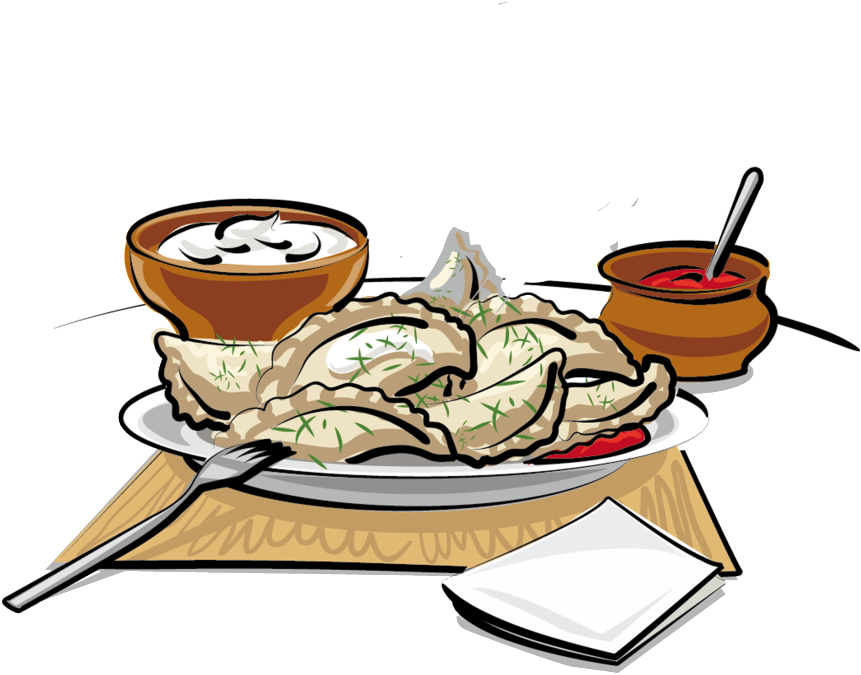

Sinyee's Absolutely Not-Authentic Jiaozi

"Jiaozi are Chinese dumplings commonly eaten in China and other parts of East Asia."
There are many popular old sayings about Chinese Dumplings(Jiaozi).
"好吃不过饺子, 舒服不过倒着.": Dumplings are most delicious, sleeping is most comfortable.
"饺子就酒, 越吃越有.": Eat dumplings With Chinese liquor, future will be richer.
"上车饺子下车面." Eat dumplings when you leave home and eat noodles when you back home.
"十月一，冬至到，家家户户吃水饺.": Every family eats dumplings on the Winter Solstice.